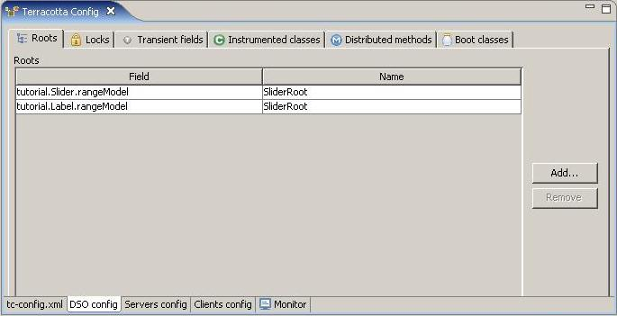
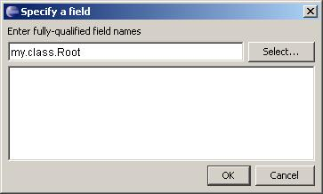
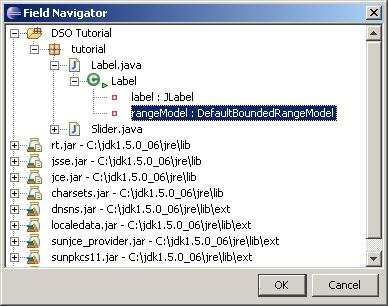
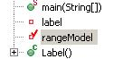
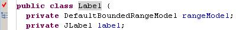

With Terracotta DSO you specify which fields of your instrumented classes are to be treated a shared roots. To specify shared roots use the Roots tab of the DSO Config page of the Terracotta Config editor.

You can manually enter a fully-qualified root field name...

... or select the field from a chooser.

Alternately, you can navigate to the field in the Workspace browser or Outline view, invoke the Terracotta context menu and choose the Shared root item.
Roots are indicated in the Workspace browser or Outline view with a red check adorning its label.

In the Java editor a root is indicated by an icon in the Overview ruler on the left gutter of the textview.

For more information on the concept of DSO shared roots refer to DSO Shared Roots.